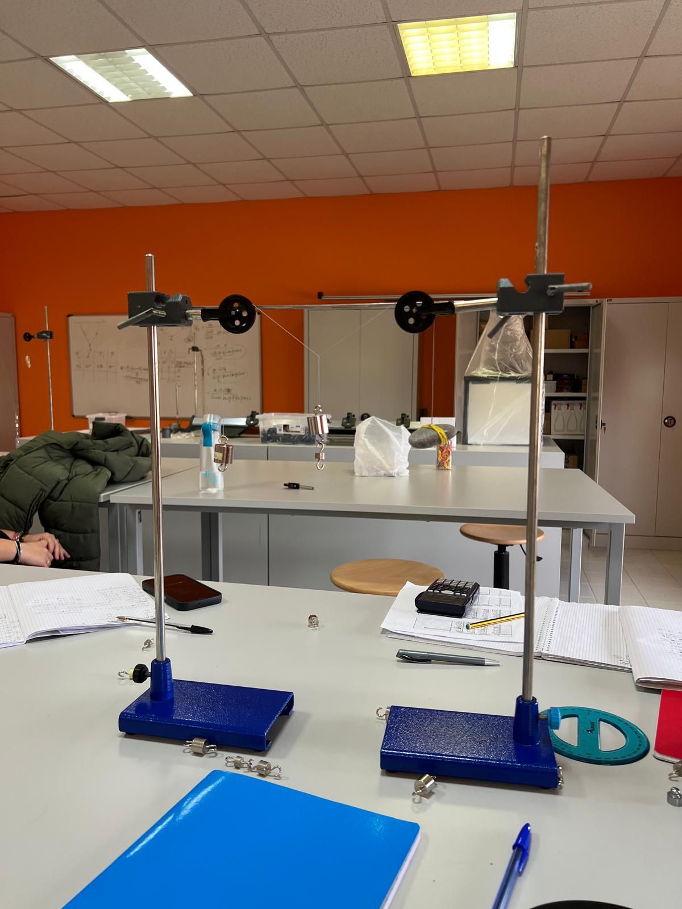

Introduzione
Nelle esperienze che abbiamo fatto nel laboratorio abbiamo raccolto e ordinato dati utilizzando due sistemi: una massa sospesa da due fili inclinati a diverse ampiezze, e un sistema di carrucole a tre masse.
Con questi dati avevamo come scopo calcolare il valore delle masse M facendo utilizzo della scomposizione in componenti delle forze. L'obiettivo era quindi analizzare le forze che agiscono su fili che reggono delle masse, e scoprire se le misurazioni fatte coincidono con quelle ottenute attraverso i calcoli.
Materiali e Strumentazione
Per compiere le diverse misurazioni abbiamo sfruttato vari strumenti:
Sistema Dinamometro
In questo sistema ci sono due dinamometri che ci permettono di misurare le forze F₁ e F₂. C'è la massa m che è sorretta dai dinamometri e si formano due angoli α e β che abbiamo misurato con il goniometro.

Fig. 1 — Apparato sperimentale: sistema con due dinamometri
Tab. 1 — Risultati delle 8 misurazioni (sistema dinamometro)
| N | F₁ (N) | F₂ (N) | α (°) | β (°) | m (g) |
|---|---|---|---|---|---|
| 1 | 0,39 | 0,29 | 80 | 75 | 67,71 |
| 2 | 0,40 | 0,34 | 70 | 65 | 69,73 |
| 3 | 0,60 | 0,55 | 55 | 50 | 93,05 |
| 4 | 0,90 | 0,95 | 35 | 35 | 108,17 |
| 5 | 0,71 | 0,80 | 43 | 45 | 107,02 |
| 6 | 1,00 | 1,00 | 35 | 30 | 109,44 |
| 7 | 0,55 | 0,53 | 45 | 35 | 70,63 |
| 8 | 0,30 | 0,48 | 45 | 40 | 53,08 |
Da notare che il risultato in grammi della massa non è costante tra le misurazioni, e quindi si svolge lo scarto quadratico medio dei risultati per arrivare ad essa.
Sistema a 3 Masse
In questo sistema dovevamo calcolare m₂, la massa posta a destra, con m₁ come massa variabile al centro e mx posta a sinistra con valore di 50 g. Abbiamo usato le seguenti formule:

📷Inserire l\'immagine inimages/tre_masse.JPGFig. 2 — Sistema a tre masse con carrucole
'">Fig. 2 — Sistema a tre masse con carrucole
Tab. 2 — Risultati delle varie misurazioni e calcoli (sistema a 3 masse)
| N | m₁ (g) | α (°) | β (°) | m₂ calc. (g) | Media | S.Q. (g²) |
|---|---|---|---|---|---|---|
| 1 | 50 | 23 | 31 | 45,20 | 47,47 g | 5,14 |
| 2 | 55 | 30 | 35 | 45,35 | 4,49 | |
| 3 | 60 | 45 | 40 | 50,56 | 9,57 | |
| 4 | 65 | 45 | 45 | 45,96 | 2,27 | |
| 5 | 71 | 30 | 50 | 34,40 | 170,86 | |
| 6 | 76 | 55 | 50 | 55,59 | 65,99 | |
| 7 | 100 | 65 | 65 | 55,17 | 59,31 | |
| 8 | 94,4 | 55 | 60 | 47,51 | ≈ 0,00 |
La massa m₂ non è costante, e quindi per ottenere un risultato approssimativo si deve ancora una volta svolgere lo scarto quadratico medio.
Conclusioni
I dati organizzati confermano le formule utilizzate a calcolare la massa in un sistema di funi. Da notare le differenze minime tra le masse calcolate nei due sistemi in equilibrio, date in ogni caso dalle imperfezioni dei sistemi di misurazione e dallo stato di essi insieme all'errore umano nella misurazione individuale.